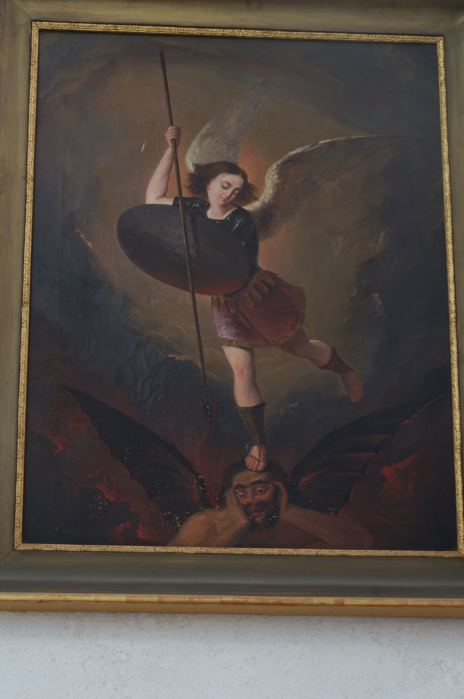

El arcángel san Miguel (en hebreo, “Quien como Dios”) es el capitán de las milicias celestiales, ángel protector de la Iglesia contra sus enemigos y encarnación del Bien en la lucha contra el Mal. En este cuadro se le representa vestido con armadura y armado con lanza y escudo, expulsando a Satanás del cielo y confinándolo en el infierno.